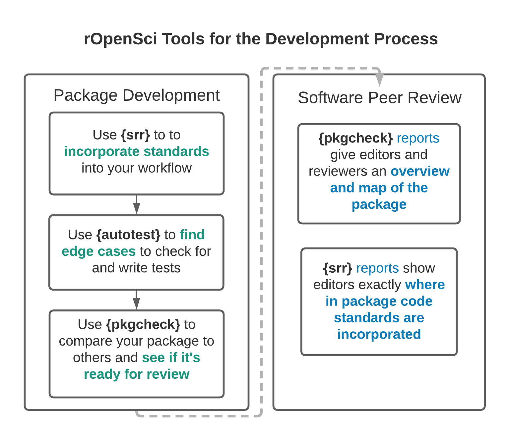

Overview¶
This organisation contains several packages developed for rOpenSci’s review process, and in particular for the review of statistical software. The following diagram depicts the relationships between some of the main packages:

Each package has it’s own repository, linked to below along with brief descriptions.
srr¶
The srr package helps
authors document compliance with our standards for statistical
software within
their actual code. The package website
has detailed descriptions of the procedure, including a demonstration
which authors can first “walk through” to understand how the srr
package works.
autotest¶
The autotest
package is intended
to be used from the first moments of package development, and throughout
the preparation of packages for submission to our peer review system. It
implements a form of mutation testing in an attempt to ensure all
parameters of all functions respond appropriately to as many different
forms and values of those parameters as possible. Continuous application
of the autotest
package throughout
package development should ensure review processes are much less likely
to uncover bugs in package behaviour.
pkgcheck¶
The pkgcheck
package represents
the final steps towards submitting a package for review with rOpenSci.
Authors should only need the one function,
pkgcheck(),
which will confirm whether or not a package is ready to be submitted.
The object returned by this function contains detailed information on
various aspects of a package.